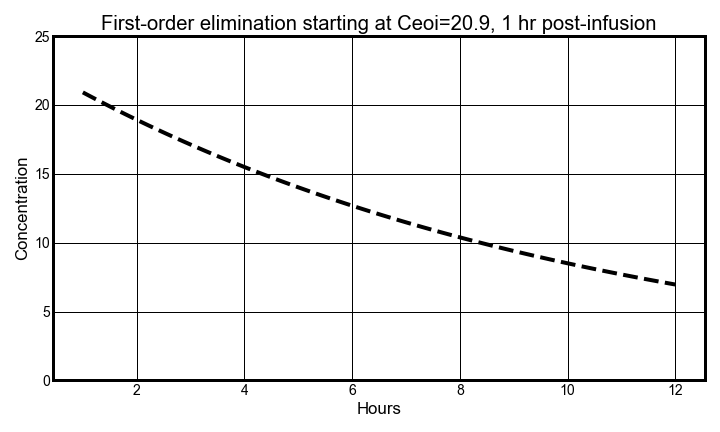
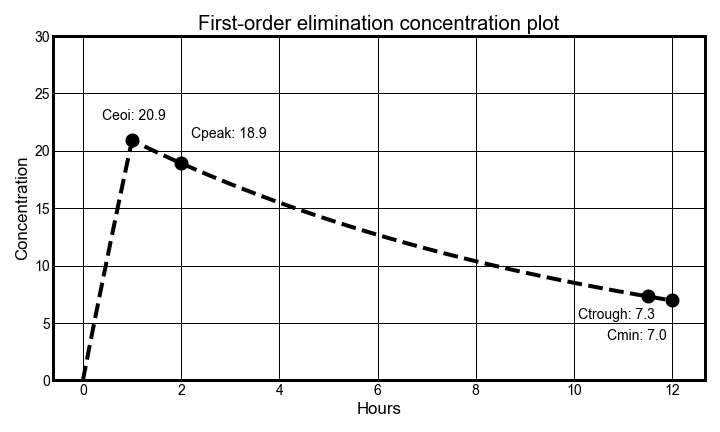

Vancomycin pharmacokinetic review
by Kurt Pessa, MS, PharmD
|
|
 |
|---|

External Links
Setting up python
-
Python Dependencies
import math import numpy as np import matplotlib.pyplot as plt -
Declaring Random PK Parameters
Dose = 1000 # mgs t_inf = 1 # hrs K_e = 0.100 ~ t1_2 = 6.9 hrs # Ke of 0.100 ~ 105 mL/min CrCl using 1985 Matze eqn V_d = 45.5 # L ~ 70 kg * 0.65 L/kg tau = 12
I. General Equation

-
c_inf(t)⇒ If infusing, use infusion equation -
c_elim(t)⇒ Else, use first-order elimination equation
-
In Python:
# General concentration equation def concentration(t): if t_inf_start < t <= t_inf_end: return c_inf(t) else: return c_elim(t)
Latex Syntax
```latex concentration(t) \Rightarrow \begin{bmatrix} t_{inf,start} < t <= t_{inf,end} & c_{inf}(t)\\ else & c_{elim}(t) \end{bmatrix} \:\:\:\:\:\:\: [1] ```
a.) Infusion Equation
First, we need to get the equation for concentration while infusing
- The concentration while infusing at time t, `c_inf(t)` is:

-
In Python:
# Infusion Equation def c_inf(t): return R_0 / CL_vanco * (1 - math.exp(-K_e * t))
Latex Syntax
>\\[c_{inf}(t) \Rightarrow \frac{R_0}{CL_{vanco}}(1 - e^{-K_e
\times t}) \:\;\;\;\;\; [2] \\]
1. Rate of Infusion (R_0)
-
Where
R_0(The rate of infusion) is: 
-
In Python:
#Rate of Infusion R_0 = Dose / t_inf
Latex Syntax
\\[R_0 = \frac{Dose}{T_{inf}} \\]
2. Vancomycin Clearance (CL_vanco)
-
and
CL_vanco(Vancomycin clearance) is: -
In Python:
#Vancomycin Clearance CL_vanco = K_e * V_d
Latex Syntax
\\[CL_{vanco} = K_e \times V_d\\]

- as this demonstration shows, if we continued infusing a 1,000 mg dose over 12 hours instead of 1 hour, we could get a level up in the 100's!!
b.) Elimination Equation
- After infusing, now, we need to start using an elimination equation. Here's the 1st-order elimination equation.

-
where
c_eoiis the concentration at the end of infusion,Tinf = t -
In Python:
def c_elim(t): return c_eoi * math.exp(-K_e * (t - t_inf))
Latex Syntax
\\[c_{elim}(t) \Rightarrow c_{eoi} \times e^{-K_e \times
(t-t_{inf})} \:\:\:\:\:\:\: [3]\\]
X = np.linspace(t_inf,tau,100)
Y = [c_post(t) for t in X]
plt.plot(X,Y)
plt.title(f"First-order elimination starting at Cmax={cmax:.1f}, 1hr post-infusion")

Now, all we gotta to is plot!
Since plot does not take function,
- sample 100 points along `concentration(t)` function over 12 hrs
X = np.linspace(0,12,100) Y = [concentration(t) for t in X] plt.plot(X,Y)